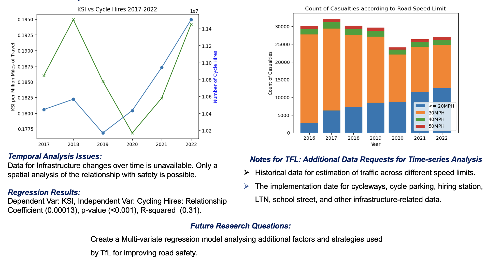
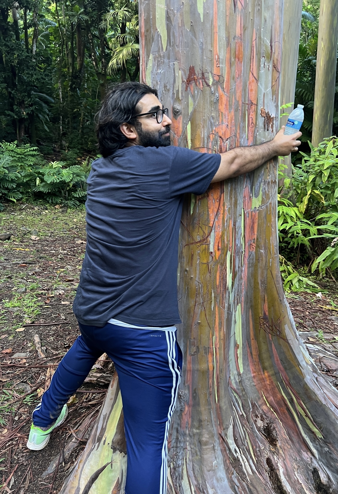

Facial Recognition Hackathon
Participated in a hackathon where I developed a facial recognition system using OpenCV for real-time image classification and tracking.
- Technologies: Python, OpenCV

CUSP Data Dive
Collaborated on the CUSP Data Dive project, analysing complex road traffic data sets to generate impactful insights for social and environmental research into cycling in cities.
- Technologies: Python, Pandas, Data Visualization

Volunteer Project - FruitPunch AI
Contributed to the ‘AI against Carbon Impact’ initiative by developing machine learning models that estimate individual carbon footprints, aiding in the global push for environmental sustainability.
- Technologies: Python, Clustering Models
DemoEmoTechHS - Audio Streaming Backend
Developed a Java-based backend for handling real-time audio streaming, recording, and playback using Spring Boot. This project demonstrated efficient handling of high-volume audio data with low latency.
- Technologies: Java, Spring Boot, PostgreSQL